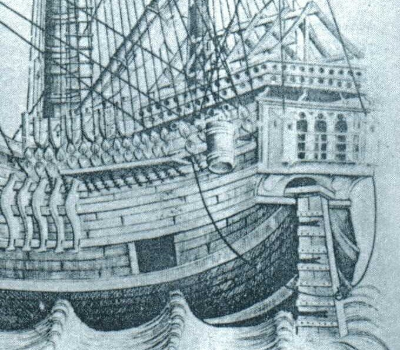
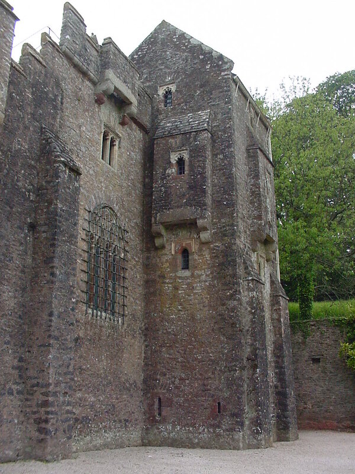
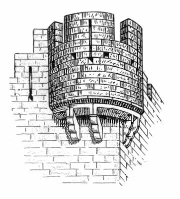
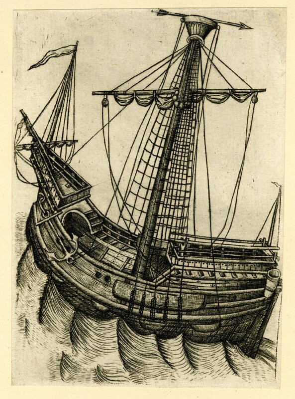

Выше кормового подзора находятся две надстройки , одна над другой, с открытыми промежутками между поддерживающими их кронштейнами. Мы уже как-то подчеркивали, что архитектура надстроек первых крупных парусных военных кораблей во многом основывалась на архитектуре фортификационных сооружений той эпохи. Вот и в нашем случае кормовые надстройки каракки повторяли в основном конструкцию бартизан, сторожевых башен, таких, как, например, в замке Комптон в Девоне, Англия.

Замок Комптон (Compton Castle) XIV век.
или во многих других крепостях XIV-XV века.

Бартизан
Через проемы в настиле на головы атакующих лили кипяток и расплавленный свинец.
Но R. Morton Nance (The Mariner's Mirror, 1912, 2, вып.8, стр. 229) полагает, что такая конструкция скорее всего выполняла куда более прозаическую функцию. Эти выступающие за кормовой срез надстройки с отверстиями внизу были гальюнами (их тогда англичане называли «гардеробами» (garderobes)) . Для удобства гардеробствующих отверстия в палубе надстроек выносили все дальше за срез кормового позора, а для предохранения последнего от агрессивной среды его покрывали листами из свинца. Судя по гравюре, на корме было три посадочных места с леерным ограждением, позже объединенных общей галереей. (это своего рода комментарий к ответу на последнюю нашу загадку уважаемого
 a_sonen .)
a_sonen .)Над ограждением с амбразурами для стрелков возвышаются круто поставленные стропила, на которые натягивали тент или, во время боя, сети. От кормовой надстройки к носу шло прочное ограждение из стоек и продольных брусьев, на которые были повешены щиты. О том, что изображено на щитах, мы уже рассказали выше.
На шкафуте по каждому борту шли настилы, которые поднимались к носовой надстройке и смыкались у нее, образуя арку. Шкафут и арка хорошо видны на другой гравюре того же автора:

Парусный корабль. Гравюра Мастера W с ключом. (1465-1490)
Такие арки являются типичными практически для всех парусных кораблей той эпохи, хотя на одних кораблях они поднимались со шкафутных настилов, на других – прямо с палубы. Эти арки дают нам повод поговорить о происхождении одного из самых известных морских терминов – кубрик. Но это будет уже в следующий раз.